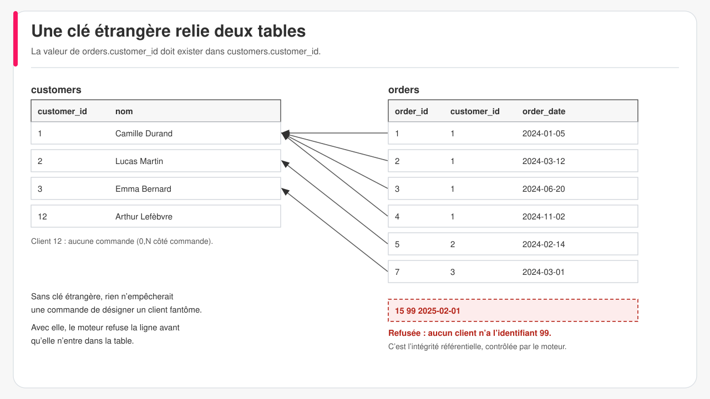

Pourquoi ne pas tout mettre dans Excel ?
Imaginons que la librairie note ses ventes dans un seul tableau.
| commande | client | ville du client | livre | prix |
|---|---|---|---|---|
| 1 | Camille Durand | Marseille | Les Misérables | 11,90 |
| 1 | Camille Durand | Marseille | Le Crime de l’Orient-Express | 7,90 |
| 2 | Camille Durand | Marseille | Vingt mille lieues sous les mers | 10,50 |
Trois problèmes apparaissent déjà :
- Répétition. Le nom et la ville de Camille sont recopiés à chaque ligne. Avec 100 000 lignes, on recopie 100 000 fois la même information.
- Incohérence. Si Camille déménage et que l’on corrige seulement deux lignes sur trois, le tableau contient deux villes différentes pour la même personne. Quelle est la bonne ?
- Aucune règle. Rien n’empêche de saisir un prix négatif, une date « 31 février » ou un client qui n’existe pas.
Une base relationnelle résout ces trois problèmes : chaque information est écrite une seule fois, dans la table qui lui correspond, et les tables sont reliées entre elles.
Tables, colonnes, lignes et valeurs
- Une table regroupe les informations sur un même type de chose (les clients, les livres…).
- Une colonne est une caractéristique commune à toutes les lignes (
email,unit_price). Elle a un nom et un type. - Une ligne (ou enregistrement) décrit une chose précise : un client, un livre.
- Une valeur est le contenu d’une cellule, à l’intersection d’une ligne et d’une colonne.
Regardons deux lignes réelles de la table customers, avec une première requête. SELECT signifie « sélectionner » ; FROM customers indique la table lue. Le chapitre 6 détaille cette syntaxe : pour l’instant, observez le résultat.
SELECT customer_id, first_name, last_name, city, phone
FROM customers
WHERE customer_id IN (1, 2)
ORDER BY customer_id;
Résultat attendu sur le jeu de données de référence (obtenu en exécutant la requête lors de la génération du cours).
| customer_id | first_name | last_name | city | phone |
|---|---|---|---|---|
| 1 | Camille | Durand | Marseille | 0601020304 |
| 2 | Lucas | Martin | Lyon | NULL |
Chaque ligne est un client, chaque colonne une caractéristique. Remarquez la case NULL pour le téléphone de Lucas : nous y revenons ci-dessous.
Les types de données
Chaque colonne n’accepte que des valeurs d’un certain type : cela évite de stocker du texte à la place d’un nombre.
| Besoin | PostgreSQL | MySQL | SQLite |
|---|---|---|---|
| Entier | INTEGER |
INT |
INTEGER |
| Texte | VARCHAR(n) |
VARCHAR(n) |
VARCHAR(n) ou TEXT |
| Montant exact | NUMERIC(8,2) |
DECIMAL(8,2) |
NUMERIC(8,2) (voir ci-dessous) |
| Date | DATE |
DATE |
DATE (stockée comme du texte) |
| Vrai / faux | BOOLEAN |
BOOLEAN (alias de TINYINT(1)) |
BOOLEAN (stocké comme 0 ou 1) |
La valeur NULL : l’absence de valeur
NULL ne veut pas dire « zéro » ni « texte vide » : cela veut dire « on ne connaît pas la valeur, ou elle n’existe pas ». Le téléphone d’un client qui n’en a pas donné est NULL. La date d’expédition d’une commande pas encore expédiée aussi.
Conséquence capitale : on ne peut pas comparer avec = à NULL. La question « le téléphone est-il égal à inconnu ? » n’a pas de réponse vrai/faux ; elle est inconnue. On écrit donc IS NULL (chapitre 6). Une colonne déclarée NOT NULL interdit cette absence.
Clé primaire : identifier chaque ligne
Deux clients peuvent avoir le même prénom, voire le même nom. Pour distinguer sans ambiguïté chaque ligne, on ajoute une colonne d’identifiant : la clé primaire (primary key, PK).
Règles d’une clé primaire : unique (pas deux lignes identiques) et jamais NULL. Dans la librairie : customer_id, book_id, order_id… Ce sont souvent de simples numéros générés automatiquement.
Clé étrangère : relier les tables
Une commande doit savoir à quel client elle appartient. On ne recopie pas le client : on stocke seulement son identifiant. Cette colonne, qui contient la clé primaire d’une autre table, s’appelle une clé étrangère (foreign key, FK).

Sur le schéma, quatre commandes pointent vers le client 1 : un client peut avoir plusieurs commandes. Le client 12 n’en a aucune : c’est permis. La ligne rouge est une tentative de commande pour un client 99 qui n’existe pas : le moteur la refuse. Cette garantie s’appelle l’intégrité référentielle.
Les cardinalités
La cardinalité exprime combien de lignes d’un côté peuvent correspondre à combien de l’autre. On la note par deux nombres minimum et maximum.
| Relation | Lecture | Cardinalité |
|---|---|---|
| client → commandes | Un client passe zéro, une ou plusieurs commandes | 1 – 0..N |
| commande → client | Une commande appartient à exactement un client | 1 – 1 |
| commande → paiement | Une commande a au plus un paiement | 1 – 0..1 |
| commande → lignes | Une commande contient au moins une ligne | 1 – 1..N |
| livre → lignes | Un livre peut figurer dans zéro, une ou plusieurs lignes | 1 – 0..N |
Nous décidons ici qu’une commande a au plus un paiement (pas de paiement en plusieurs fois). Cette règle sera appliquée dans le schéma (chapitre 4) par une contrainte d’unicité.
Contraintes et intégrité
Une contrainte est une règle que le moteur fait respecter à chaque modification :
PRIMARY KEY: identifiant unique et non nul ;FOREIGN KEY: la valeur doit exister dans la table référencée ;NOT NULL: l’absence de valeur est interdite ;UNIQUE: pas de doublon (par exemple l’adresse e-mail d’un client) ;CHECK: une condition doit être vraie (par exemplequantity > 0) ;DEFAULT: une valeur utilisée si rien n’est fournie.
L’intégrité est l’état d’une base dont toutes les contraintes sont respectées. C’est elle qui rend les données fiables.
Exercice guidé : trouver le type de relation
Une librairie veut aussi mémoriser l’éditeur de chaque livre. Un éditeur publie plusieurs livres ; chaque livre a un seul éditeur. Dans quelle table placeriez-vous la clé étrangère, et pourquoi ?
Afficher la correction détaillée
La clé étrangère se place du côté « plusieurs », c’est-à-dire dans la table books : chaque livre stocke l’identifiant de son éditeur (publisher_id). Si on la plaçait dans la table des éditeurs, il faudrait y stocker une liste de livres dans une seule cellule, ce qui est impossible dans le modèle relationnel (chapitre 2, première forme normale).
Règle pratique : dans une relation un-à-plusieurs, la FK est toujours côté « plusieurs ».
Exercice autonome : NULL ou pas NULL ?
Pour chaque colonne, dites si elle doit autoriser NULL : customers.email, customers.phone, orders.shipped_date, books.publication_year. Justifiez.
Afficher la correction détaillée
customers.email: NOT NULL (et UNIQUE) : c’est l’identifiant de contact du client.customers.phone: NULL autorisé : le client peut ne pas en fournir (voir Lucas Martin dans le jeu de données).orders.shipped_date: NULL autorisé : tant que la commande n’est pas expédiée, la date n’existe pas.books.publication_year: NULL autorisé : l’année est inconnue pour La Guerre des Gaules dans notre catalogue.
Critère : une colonne est nullable lorsque l’information peut légitimement manquer, pas lorsqu’on est paresseux.
Valider · question 1
Voir la justification de chaque réponse
- Incorrect — customers : customers contient la clé primaire customer_id ; elle est référencée, elle ne référence personne.
- Bonne réponse — orders : orders possède la colonne customer_id qui référence customers.customer_id.
- Incorrect — books : books n’a aucun lien direct avec les clients.
Valider · question 2
Voir la justification de chaque réponse
- Incorrect — Le téléphone vaut 0 : Zéro est une valeur ; NULL est l’absence de valeur.
- Incorrect — Le téléphone est une chaîne vide : Une chaîne vide est une valeur connue (du texte sans caractère).
- Bonne réponse — Le téléphone est inconnu ou non renseigné : NULL représente l’absence ou l’inconnue.